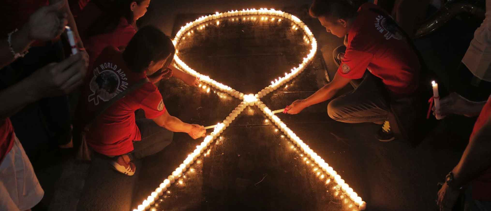
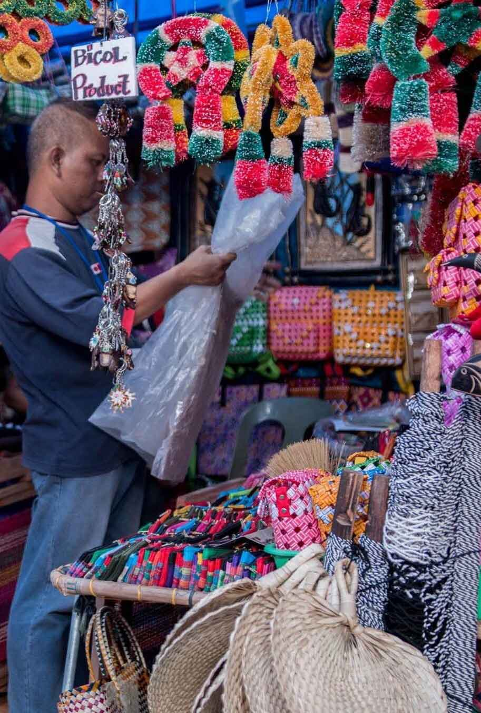

THE CITY GOVERNMENT OF SAN FERNANDO LA UNION JOINED THE COMMEMORATION OF THE WORLD AIDS DAY
The City Government of San Fernando La Union, through the City Health Office in partnership with the Department of Health and several Organizations joins the commemoration of the World AIDS Day to raise awareness and show support on the HIV/AIDS disease December 1,2018. The date has been observed by UN member states every year since 1988, a show of support for those currently living with HIV and a chance to remember those killed by Aids-related illnesses.
The viruswas only identified in 1984, when it sparked a huge international scare and was wrongly assumed to only affect members of the LGBT+ community, but has already killed 35m people and infected 78m around the globe. While significant scientific advances have been made over the last 34 years, sufferers continue to face stigma and discrimination as a result of ignorance about the nature of the condition.
World Aids Day was first conceived of in August 1987 by World Health Organisation (WHO) publicists James W Bunn and Thomas Netter, but has been run by the Joint United Nations Programme on HIV/AIDS (UNAIDS) since 1996.
The Pope, the president of the United States and other world leaders all use the occasion to reaffirm their commitment to eradicating the disease, a goal the UN hopes to achieve by 2030.
Every year UNAIDS, the WHO and a collection of grassroots NGOs agree on the theme for the day, drawing attention to different aspects of the condition.
In 2018, that theme is “Know Your Status”, encouraging people to undergo medical testing to ascertain whether or not they have the virus and to ensure anyone with a positive diagnosis is put in touch with the quality care and prevention services they need. Those wishing to show support for the cause in the UK on World Aids Day can make a donation to the National Aids Trust online or by buying a lapel ribbon online or in MAC Cosmetics stores and select branches of Morrisons and HSBC.
MERKADO TI UMILI NOW OPEN
Are you one of the early Christmas Shoppers? Merkado ti Umili is now open with a wide array of local products perfect for sharing and giving these season of Christmas. What are you waiting for? The stalls are open from 8AM to 12MN.
